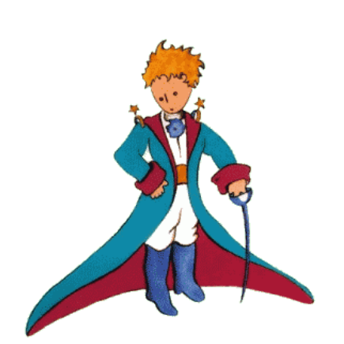
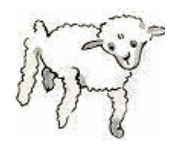
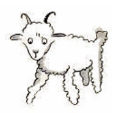
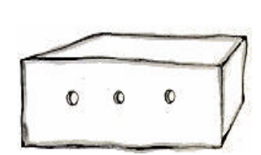

Viví así, solo, sin alguien con quien poder hablar verdaderamente, hasta hace seis años cuando tuve una avería en el Sahara. Algo se había estropeado en el motor de mi avión. Como viajaba sin mecánico ni pasajero alguno, me dispuse a realizar yo sólo, una reparación difícil. Era para mí una cuestión de vida o muerte pues apenas tenía agua pura como para ocho días
La primera noche me dormí sobre la arena, a unas mil millas de distancia del lugar habitado más próximo. Estaba más aislado que un náufrago en medio del océano. Imagínense, pues, mi sorpresa cuando al amanecer me despertó una vocecita que decía:
–¡Por favor... píntame un cordero!
–¿Eh?
–¡Píntame un cordero!
Me puse en pie de un brinco y frotándome los ojos miré a mí alrededor. Descubrí a un extraordinario muchachito que me observaba gravemente. Ahí tienen el mejor retrato que más tarde logré hacer de él, aunque reconozco que mi dibujo no es tan encantador como el original. La culpa no es mía, las personas mayores me desanimaron de mi carrera de pintor a la edad de seis años, cuando sólo había aprendido a dibujar boas cerradas y boas abiertas.
Miré, fascinado, aquella aparición. No hay que olvidar que me encontraba a unas mil millas de distancia del lugar habitado más próximo y el muchachito no parecía ni perdido, ni muerto de cansancio, de hambre, de sed o de miedo. No tenía la apariencia de un niño perdido en el desierto a mil millas de distancia del lugar habitado más próximo. Cuando logré, por fin, poder hablar, pregunté:
–Pero… ¿qué haces tú aquí?
Y él repitió suave y lentamente, como algo muy importante:
–¡Por favor… píntame un cordero!
Cuando el misterio es tan impresionante, uno no se atreve a contravenir. Por absurdo que aquello pareciera, a mil millas de distancia de algún lugar habitado y en peligro de muerte, saqué del bolsillo una hoja de papel y una pluma fuente. Recordé que yo había estudiado geografía, historia, cálculo y gramática y le dije al muchachito (algo malhumorado) que no sabía dibujar.
–No importa, ¡Píntame un cordero!
Como nunca había dibujado un cordero, repetí uno de los dos únicos dibujos que era capaz de realizar: el de la boa cerrada. Y quedé absorto al oírle decir:
–¡No, no! No quiero un elefante dentro de una serpiente. La serpiente es muy peligrosa y el elefante ocupa mucho sitio. En mi tierra todo es muy pequeñito. Necesito un cordero.
¡Por favor, píntame un cordero!
Dibujé un cordero. Lo miró atentamente y dijo:
–Éste está muy enfermo. Por favor haz otro.
Volví a dibujar.
Mi amigo sonrió gentilmente, con indulgencia, y dijo:
–¿Ves? Esto no es un cordero, es un carnero. Tiene cuernos…
Realice nuevamente otro dibujo y también fue rechazado como los anteriores.
–Es demasiado viejo. Quiero un cordero que viva mucho tiempo.
Ya impaciente y deseoso de comenzar a desmontar el motor, tracé rápidamente este dibujo, se lo enseñé, y dije:
–Esta es la caja. El cordero que quieres está adentro.
Me sorprendí al ver iluminado el rostro de mi joven juez:
–¡Oh, es exactamente como yo lo quería! ¿Crees que se necesite mucha hierba para este cordero?
–¿Por qué?
–Porque en mi tierra todo es muy pequeño…
–Será suficiente. El corderito que te he dado también es pequeño.
Se inclinó hacia el dibujo y exclamó:
–¡Bueno, no tanto…! ¡Ah, se ha quedado dormido!
Y así fue como conocí al principito.